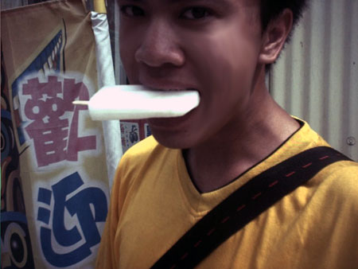
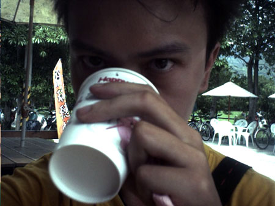
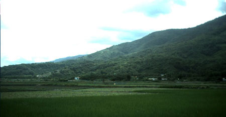
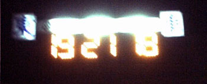

今天起床的時間，五點半，在床上賴床滾了兩圈之後，於5:40正式起床。
昨天晚上我所使用的是小兔子睡袋+小兔子被被，我已經有好十幾年沒有在幼稚園睡覺了 :D
起床後把東西收回包包裡，昨天洗的衣服，除了襪子之外，其他都乾的差不多了。
因為昨天很蠢，用上半身去靠隧道裡頭的牆壁，結果整件上衣的右邊就髒的一踏糊塗。
洗也洗不乾淨，所以今天決定，繼續穿這一件髒掉的黃色衣服。
我帶了三件衣服出門。
一件黑的，是系上的系服...很吸熱，受不了。
一件黃的，還不錯穿，一件一百，只是髒了。
一件白的，跟黃的一起買，款式也差不多，就是T-shirt，也是一件一百，
這件不想穿它，想暫時保持乾淨。
去小朋友的化妝室，洗臉刷牙，離開幼稚園的時候是早上六點整，神父還沒起床，看不到他。
想問名字以及跟他道謝也沒有辦法，拍了幼稚園的照片（昨天太黑，相機不能拍），就出發了。
前方有叉路，左邊是到花蓮市區，就是我昨天晚上吃晚餐的地方。
右邊則是往吉安的方向，也就是我今天要走的路。
沿路會經過瑞穗、富里，最後抵達台東，但是路真的有點遠，
預計不到晚上七、八點可能抵達不了台東了。
6:10，我到我家吃早餐，買了一份蛋餅夾油條，還有一顆紫色的饅頭（芋頭口味）。
花費33元，老闆娘好心的讓我裝冰水，我拿空杯子給她的時候，她居然還幫我洗杯子...感動T_T
早餐店有養一隻小黑狗，看牠長得可愛，就過去摸摸牠的頭，順便幫牠拍張照。
結果牠一口就把我的手給咬下去了..... /_\ 老闆娘，借我洗個手吧，謝謝。
食物沒有在早餐店吃，我包起來趁天氣涼快，一邊騎一邊吃。
先吃蛋餅夾油條，饅頭先放著當點心，以免半路肚子餓。
不小心給我看到路標，距離台東尚有163公里....我的天呀，一百六十三！？天黑看能不能騎的到...
又往前騎了一個小時，早餐店的水快喝完了，看到前面有可以要水的地方...有喪事
去跟那邊樂儀隊的人要水喝，結果拿了三杯杯裝水給我。
我把兩杯拆開到進我自己的杯子裡，另外一杯放入背包裡，以備不時之需，可以拿來救急。
7:25，看到今天午餐的目標，距離瑞穗有49公里，有點小遠，不過清晨騎車真的很舒服。
完全沒有太陽，涼爽的風一陣一陣的吹著，還會覺得有點涼，想多穿衣件衣服說 :P
繼續往前騎車，嘴巴無聊的時候就啃兩口饅頭，然後繼續騎。
路上有看到火雞，去牠們拍一張照，火雞可以煮成嘉義火雞肉販，可是長得好醜說∼嘎。
另外還有看到有人在賣蝸牛，整個籠子裡面都是蝸牛，驚人的有點恐怖...
台灣的法國菜餐廳應該跟花蓮大量進口蝸牛來賣才對。
本來現在我應該在吃麻吉的才對，可是卻沒有看到賣麻吉的店了 T__T
怎麼會這樣呢..明明就還在花蓮，卻沒有名產店了，要我掉頭騎回去買也不可能，太遠了說...
所以這次沒有口福吃到曾老先生的手工麻吉，非常的飲恨呀！！（怨靈環繞）
嗯，下面河流裡，該不會都是木瓜牛奶吧？
8:10的時候，騎過豐平橋，8:20抵達南平（別問我這是哪裡..我真的搞不清楚）
8:35，水還有..口也不渴...可是看到消防隊...就很想去要水喝。

我想，消防隊的經費預算一定比警察局多，因為消防隊的飲水機有冰水這個選項 T_T
果然來要水的對的決定，喝完一杯再裝一杯，滿意了再走。
該台飲水機為消防之友（這是啥？）的陳先生所捐贈，我感謝你，鞠躬。
9:20太陽開始出來了，本來今天早上還是陰天的，可是到現在太陽已經越來越大。
抵達光復，沒有做停留，就接著上路，我想在十點左右到瑞穗，吃飯喝牛奶兼休息。
9:30，又讓我看到一個路牌...說距離台東尚有134公里，聽起來有點...遙遠。
除了路標之外，又看到了一個可愛的牌子，『花蓮糖廠』。
台糖有冰品可以吃，這是不容錯過的地方，去裡面買了一根清冰棒，花10元。
這真是超∼級∼無∼敵∼霹∼靂∼美∼味的東西呀！吃的讓人欲罷不能！
騎車騎到我整個臉都黑嘛嘛的 >"< 對皮膚有害....回台北之後要去護膚才行。

冰棒好吃，可惜才一下子就吃完了，但是棒子捨不得丟掉，就咬棒子咬了半個小時，解嘴蠶。
10:15，太陽大，沒水喝，看到一家小雜貨店，就去裝水。
花蓮人喝的大多是井水，喝起來有自然冰涼和甘甜味...

路旁，就在馬路的旁邊，沒有任何的圍欄或是什麼，種滿了文旦樹，而且結實累累。
開放給路過的民眾當街採果嗎？
半路休息看地圖，環島不一定要帶地圖，但是如果要帶的話，請帶一本好一點的，路詳細一點的。
不要像我一樣，帶一本觀光地圖，整本書中有地圖的部份不到三十分之一，其他通通都在講
『哪邊有旅遊景點，哪邊有什麼好吃的東西，過夜的情報...』等等。
地圖很小一張，而且一張圖就是花蓮，另外一張圖就是台東這樣。連比例尺都沒有標上去。
終於，在10:40，抵達瑞穗，太陽好大，汗流不止，白癡路標說距離瑞穗牧場剩下4公里。
我騎了半天連個屁也沒看到，想說會不會不小心騎過頭了...要不要往回走。
去問了路旁賣文旦的老太太，才知道還要繼續往前騎，過橋之後右轉，再繼續騎才會看到。
真是他喵的路標，什麼4公里，14公里還差不多！
路上也有開車的人跟我問路，說瑞穗牧場到底在哪？
好不容易找到了，但是它的入口處超級不起眼，一不小心就騎過頭了也不知道。
可是到瑞穗一定要去喝喝看現擠的牛奶滋味如何，所以只好一邊譙一邊騎。
騎進瑞穗牧場的時候，看到一樣是騎腳踏車的四人組。
前兩個用毛巾還是什麼的，把頭整個包起來，只露出眼睛部份（沒拍到照片）
第三個居然自己背一個大包包騎車...哇靠！醬會死人耶！
第四個更猛...戴斗笠，大家給他鼓鼓掌∼

打了招呼沒有多聊就擦身而過了，不曉得他們要從哪裡騎到哪裡？
從入口處又往前了一段路（路很爛）才看到販賣部，去買了一杯冰牛奶喝，30元。
喝起來...就是冰....還有...牛奶的味道...我喝不出來跟在超商買的牛奶有什麼差異。

一堆遊客都在問說，牛呢？牛在哪裡呀？
我一隻牛也沒有看到，只看到了兩隻鴕鳥，讓遊客玩弄。
本來想在瑞穗停留吃午餐，結果跟計畫的不一樣，因為我已經騎離開瑞穗市區了。
瑞穗牧場根本就是在瑞穗的邊邊，也沒什麼胃口吃東西，所以就接著往前騎。
離開瑞穗，心著等一下會不會在遇到剛剛那四個騎腳踏車的？
前方的雲，看起來像是天使雪白的翅膀，我好想有一對翅膀。
等我騎車腳酸了，就用翅膀飛一段路，飛到翅膀酸了，就用腳踩下踏板向前進。
才剛騎出牧場，就是一串上坡...說陡不陡，說長不長，但是會讓人騎的很賭爛。
騎上坡永遠都是有代價的，等痛苦完之後，下坡就會出現。
騎完上坡，有一串超長的下坡等著我。上坡跟下坡的長度比例大概是 1:2 吧。
滑到下坡結束，看到一間學校，此時是11:40，太陽超大，連戴著太陽眼鏡都欺騙不了自己。
就算要趕路，再繼續騎下去可能會沒命...所以躲到學校去休息，順便找飲水機補充水分。
結果找不到飲水機，只有看到洗手台...試喝了一口
怎麼跟剛剛那個雜貨店裝給我的水味道一樣。
看來學校裡的水源也是井水的樣子
太陽大到令人卻步，我的手跟脖子還有臉有塗防曬油，腳穿短褲，可是沒有塗。
結果現在腳已經變的紅通通了，好像有點晒傷，等一下非塗不可了。
我現在躲在學校的陰影下，坐在升旗台上寫今天上半天的遊記，躲這個恐怖的太陽。
等等可能在學校裡找個地方，沖個澡，現在距離台東還有一百公里以上，今天不曉得騎不騎的到。
兩隻腳晒的不太舒服，腳有點痛，就去洗手台沖一下冰涼的水。
順便把早上沒有曬乾的襪子，拿出來接著晒∼
牽著腳踏車在學校裡，走來走去，沒有半個人在學校。
只有一個工友在睡午覺沒有理我，看到一面大鏡子，就拍幾了照片 :P
在三民國中休息，太陽還是很大，坐在洗手台用水沖腳，休息看地圖，打混兼摸魚。
到下午1:10，手、腳、脖子都塗上防曬油，出發吧！GO！環島少年！
沿路風景真的很漂亮，路的兩邊都是田野風光，稍遠的地方則是高山環繞（什麼山我搞不清楚=.=）

往前行就是玉里，玉里最有名就是要吃西瓜。
可是在距離玉里還有七公里的時候，就開始有人在賣玉里西瓜。
我想說...這個西瓜一定不道地，就沒有跟他買，想說騎到玉里，在去吃冰涼的西瓜。
結果等騎到玉里的時候，才發現沒有人在賣西瓜 /_\
等騎超過玉里了，還是沒有人在賣西瓜...從我錯失花蓮的麻吉之後，我又錯失了玉里的西瓜。
心裡真是鬱卒到有如被緋村劍心的天翔龍閃攻擊到...說有多痛就有多痛...><"
加油！目標是池上吃便當！
因為沒有在花蓮吃到麻吉，對我心理造成很大的創傷。
下午1:50，走到了花蓮跟台東的縣界，有一家台玉休息站。
這次絕對不能錯過這個好機會！去裡面看看有沒有賣麻吉吃....，順便裝水喝。
繞去店裡面看有沒有麻吉可以買，結果沒有賣曾氏麻吉（這是純手工的，只能放三天）
下面是我跟店員的對話：
我：請問有沒有賣西瓜？ （我對沒有吃到西瓜這件事，耿耿於懷，西瓜是我最愛的水果）
店員：西瓜？（一副懷疑的樣子）
我：西瓜。（我再一次堅強的肯定的重複了我的渴望）
店員：西瓜？（店員實在不明白怎麼會有人到名產店指明要買西瓜。）
我：西瓜。 （我用手比出了西瓜的樣子...心理抱著最後一絲絲的機會）
店員：我們沒有賣西瓜喔！
我：嗚....（九頭龍閃！....我死了）
於是就買了一包花蓮黍，65元。還有五種口味的的麻吉，黑糖、釋迦、櫻花、芝麻、芒果。
一斤120元，我買了12個，只花了是35元。
兩個名產一共花100元。美麗的銷售小姐還幫我裝了冰水。
買到了名產，就開心了！ 呵呵∼∼
邊騎車邊吃麻吉跟花蓮黍，又騎了半小時到達富里。
騎呀騎，有上坡，有下坡，不算太難騎，路上加油聲有點少。
有原住民的小朋友染金髮在馬路旁跳街舞，他們也跟我喊加油，
還有一群小朋友在路上玩，也幫我打氣。
下午3:40，騎到了池上的遊客服務中心，那表示便當離我近了。
去裡面裝了杯水，休息一下，謝謝好心的店員，裝冰水給我喝。
洗臉稍作休息∼有點想拉屎，不過廁所正在清掃中，就算了。
從縣界開始騎，騎到下午4:00，才抵達池上（台東的上方）
總算是進入台東了，今天的目標就是從花蓮騎到台東。
所以如果想休息的話，現在就算是目標達成，可以睡覺去了。
可是還想繼續騎下去，看能不能一口氣騎到知本（還很遠...很遠...）
既然人到了池上，就有一件事情一定非做不可，是什麼呢！？

噹噹。池上米做的池上便當。
一個60元，附湯-紫菜蛋花湯。

在湯的旁邊還有另一個鍋子，就常理推斷，你一定也在想說，
『裡面應該是仙草密，要不就是綠豆湯。』
我只能說你的思想太邪惡了（手勢請套用董志成的客家妹），那一鍋是紫菜蛋花湯without蛋花。
也就是素的紫菜湯。
我跟老闆娘說我很餓，中午只有在瑞穗喝一杯牛奶而已...。
老闆娘就又另外裝了一大碗白飯給我吃，池上米的白飯唷！
我一連喝了五碗湯，把飯菜都吃的乾乾淨淨，非常美味。
在吃飯的時候，還聽到隔壁桌的人在講八卦，他們說有一個人叫阿凱。
人長得又壯又勇，可是被自己的老婆給毒殺了，然後保險金被老婆領走。
老公都還沒有出殯，老婆就已經跟別的男人跑掉了。
殺人的方法是利用阿凱愛喝酒，所以老婆就在酒裡面下毒....
講的口沫橫飛，等我吃完飯，我已經知道阿凱在家裡九個小孩中排名第三。
以及那個毒殺老公的女人，現在看到以前的熟人，都會裝不認識，買菜還會跑到別的地方去買...
聽完八卦...雖然還有續集在上演，可是我要走了 =.= 沒法聽完
水也喝的剩下三分之一，正想跟老闆娘裝水，結果她說今天剛好洗茶壺，所以沒有水。
看到旁邊的7-11，突然想到單車版有人說去7-11裝重量杯的冰塊不錯！
我就跑到裡面去，跟店員打聲招呼之後，然後裝了滿滿的冰塊，就得到了一整杯的冰塊水。
吃飽飯，補足水，下午4:30從池上繼續出發。
今天的目標是要騎到台東的知本，離這邊還有80公里左右，不趕路的話，等到的時候天已經黑了。
剛騎半小時，5:05，屎意來了，正想著要不要在野地大便的時候，就出現了一家加油站。
趕快去拉屎∼
拉完屎一看手機，奇怪...我明明是辦台灣大哥大的門號，怎麼現在變成泛亞電信？ @@"
騎到下午6:00，四點多從7-11裝的冰塊水，現在喝起來還是冰涼的。
太陽開始下山，我把太陽眼鏡摘下來，換戴一般的眼鏡，等等就要看不見路了。
換完眼鏡，看到路旁有一個奇怪的牌子...寫著『奮奮叫』。
我還在納悶...什麼東西奮奮叫。結果前面又一個牌子，『隆隆叫』。
隆隆叫！？這是啥米碗糕？
有二就有三，前面又來一個『啾啾叫』。
真是夠了...這是什麼怪招牌？
答案揭曉，前方出現一家餐廳，名稱是 『口禾口禾叫餐廳』，怕別人看不懂『口禾』是什麼字。
招牌上還加了注音，這個字念做『ㄏㄜ』輕聲。
因為事發突然，我還來不及拍照，就這樣發生完畢了，嗯，耍白癡完畢。
繼續騎呀騎，自己在哪裡也搞不清楚，只覺得台東離我還好遠。
上下波雖然有，可是都不明顯，有點像是在騎平路，可是騎起來卻好疲倦。
路旁種的都是『樟樹』，這是台東的縣樹，我之前到台東玩的時候，在布農部落有認種了一棵。
路旁看到有小山豬，用項圈養，好可愛，就過去拍照，因為今天早上左手被狗整隻咬進去。
所以就不敢再摸山豬的頭...小朋友看到我停下來，還很好心的問我，腳踏車是不是壞掉了？
6:30，到了一個大馬路的交會口，此時天空已經有點昏暗。
看到一個賣釋迦的批發商『阿娟釋迦』，那時候店裡生意正好，
老闆娘裝了幾十籃的釋迦要讓7-11的宅即便送去宅配。
我一過去就問老闆娘有沒有賣西瓜？
（花蓮吃麻吉的心願滿足之後，在玉里沒有吃到西瓜，一直讓我非常的不甘心）
老闆娘說沒有，這邊只有賣釋迦。
可是我看到前方的冰箱中，明明就有切了一半的西瓜躺在裡面。
我就用手指了冰箱中的西瓜，說那個不是拿來賣的嗎？
老闆娘說那個是自己人要吃的，不是拿來賣的，如果我要的話，可以請我吃沒關係。
說完就拿了一把大菜刀（真的很大一把），去冰箱中切西瓜給我吃。
我這次環島，真的受到很多人的照顧...連西瓜都有人請我吃... T_T
正想跟老闆娘道謝，順便拍張她的照片時，她說不准拍（拿著菜刀指著我）。
我顧慮於生命安全，只好捨棄了她的玉照。
天色已暗，不能浪費時間。所以拿著西瓜，一邊騎車一邊吃。
往前走山路，天色昏暗，晚上爬坡很累，之前買一個腳踏車用的照明前燈，現在正是使用的時機。
結果難用的要死！首先根本就不亮，亮那一點點，不知道要照什麼東西...連前面的路都看不見。
再來就是很吃電池，一個前燈要花四個A3的電池，結果才用十幾分鐘而已，就沒電了，搞屁呀。
還好周圍的車不少，利用他們的大燈來幫忙照明。
台東到了晚上，除非是主要的道路...不，應該說除非是附近有商家的道路，
不然幾乎全部的路燈都是關的，不打開。
真他媽的！不開的話，那幹嘛要裝呢！？
黑漆嘛嗚的，騎起車來真的很恐怖！連路面是什麼情形都完•全看不見。
只能勉強看到路面上那個白色的交通線條。
在台東的晚上騎車，好像在飛一樣，像是在漆黑的夜晚閉著眼睛騎車...很沒有安全感。
7:05分，天色已經全黑了，抵達綠色隧道，這邊好像很有名的樣子。
可是晚上我騎，反而覺得鬼影重重，可能要白天看這邊經過這邊，才會比較好看吧。
晚上太黑，相機無法拍照，我也沒有心情拍照 :( 離知本還有20幾公里，笑也笑不出來。
7:20分，好不容易抵達了台東火車站，本來路線是想要直接騎到知本去。
可是看到路標指著火車站，就想說去一下好了，應該不會很遠吧...
到達車站的時間是：晚上七點二十一分十八秒，至少車站的時鐘是這樣寫的。

路上嗚漆嘛黑，我又是路痴，好不容易找到了車站，拍了幾張照片，就想趕快回到剛剛的路去。
可是在那邊繞呀繞的，怎麼也走不回原本的台九線，整個心臟都快停了。
內心超級不安的說！！早知道會迷路，就不會繞路到火車站來拍照片了。
從地圖上來看，火車站跟知本是兩個不同的方向。
我繞了20分鐘，好不容易又走回台九線，結果卻是走到之前已經走過的地方。
也就是說我剛剛迷路的時候，又往回騎了一大段...真可惡。
夜晚的台東市，一點也不燈火通明...
晚上7:50，重新走回台九縣，但是距離知本還有16公里，
今天晚上九點之前能夠找到地方住，就已經是萬幸了。
我開始在考慮要不要奮力一點騎到知本去，還是就在這邊隨便找個地方過夜就好...
後來決定的結果，還是往知本繼續騎。
我先後去加油站以及7-11裝水和冰塊，看著知本的路標拼命的騎。
能夠早一步到，也是求之不得，屋漏偏逢連夜雨，此時竟然開始下起小雨...
我身上被雨淋的有點濕，還好車上的車袋是防水的，不用擔心裡面的電腦以及衣物會被淋溼。
只是知本到底在哪裡呀！？
那個路標很不負責任...這一看到才說距離知本10公里，想說快到了，再加油一下就好。
結果往前騎了5分鐘，心裡以為現在大概還剩下8公里吧，結果出現路標一看...距離知本11公里！
哇靠！搞什麼鬼呀！越騎怎麼會越遠！？照這樣騎，我永遠也到不了知本！媽的天上又在下雨。
右邊遠方的山，山上的雲還在打閃電...白天才聽說有颱風要來，不會這麼快現在就已經到了吧？
我還在騎車的說，連過夜的地方都還沒有著落。
很努力的又往前拼命騎，安慰自己前面就是了，快要到知本了。
可是短短的11公里，騎起來卻是好長好長，路上黑暗暗，沒有任何路燈。
不停的騎上突起跟凹陷的水溝蓋，心情很糟。
騎了一段時間，又看到牌子，距離知本7公里，我騎了這麼久...才縮減4公里而已......
不管了，騎就是了，別想太多...
前面又是無止盡的黑暗道路，外加小雨，以及失落的心情，今天一口氣從花蓮騎到台東。
真的有點瘋狂，照這樣下去，明天從台東到鵝鑾鼻。
東海岸我四天就騎完了...比我規劃的行程快了三天。
本來是想輕鬆的環島，結果很有可能要變成最短時間環島記錄了...
想著想著已經看到了前面亮光點點，有飯店大廈在黑夜中林立。
知本終於到了，我也被雨淋濕的有點悲情。
（今天的騎乘時間，是第一天從台北到宜蘭的兩倍...真夠瞧的呢！）
晚上8:30，正前方處就是溫泉大飯店林立。
去那邊住一個晚上，應該要花上1200~1500左右跑不掉，今天真是夠累的了...也該對自己好一點。
可是又不想亂花錢.....非常非常的掙扎。
正在猶豫要不要去住大飯店的時候，看到馬路的對面有一家民宿，
看起來生意有點清淡，感覺很好商量價錢 :P
跑過去問問看我這樣一個人住一個晚上，然後把腳踏車牽到裡面放，要收我多少錢？
結果我睡的房間是一樓的團體通鋪，一晚只要六百元（還請我吃三餐），算蠻實惠的價格！
把腳踏車牽到裡面，解下單車上的行李正要拿去房間放的時候，老闆娘問我說吃過了沒？
我說下午四點在池上有吃過便當，現在還不算太餓（其實是飢寒交迫）。
老闆娘二話不說，就說要請我吃晚飯。
請我吃烤的土雞，還有兩粒土雞蛋煎的蛋（自己加後院養的雞，下的蛋），配白米飯吃。
雖然不是說頂高級美味的料理，但真的是人間處處有溫情，還請我吃晚飯...T_T
吃完飯，又拿來了兩粒釋迦以及一大塊的西瓜給我當點心，這是我離家以來吃的最飽的一餐。
老闆娘-沈小姐是個很好的人，民宿整理的一塵不染，收費便宜（是知本的半價）。
在浴室洗過了澡和衣物，就去樓上看看電視、聊聊天。
十一點左右，民宿關門，我也就回來樓下的房間整理今天的遊記，
睡得地方環境很舒服，價位又不貴，讚！
從馬路進來算是2樓，我住1樓，是通鋪，3樓跟4樓是套房，5樓是加蓋的頂樓。
一樓住滿人可以睡50個人左右，今天只有我一個人，我愛睡哪就睡哪，打呼也不怕 :P
明天聽說有杜鵑颱風要來，而且是直接登陸台東，我終於可以體驗到直接被颱風打到的感覺了！
如果明天風雨交加的話，我就會在這間民宿多待一天，等到颱風過後在出發。
如果沒什麼風雨的話，那我就會往鵝鑾鼻騎，目標是一口氣從台東抵達鵝鑾鼻。
當天晚上睡在燈塔下面....看星星...被雨淋...被蚊子咬...多浪漫呀！ 男人的情懷。
本日花費：早餐33元，台糖冰棒10元，名產-麻吉+花蓮薯100元，瑞穗鮮奶30元，池上便當60元。